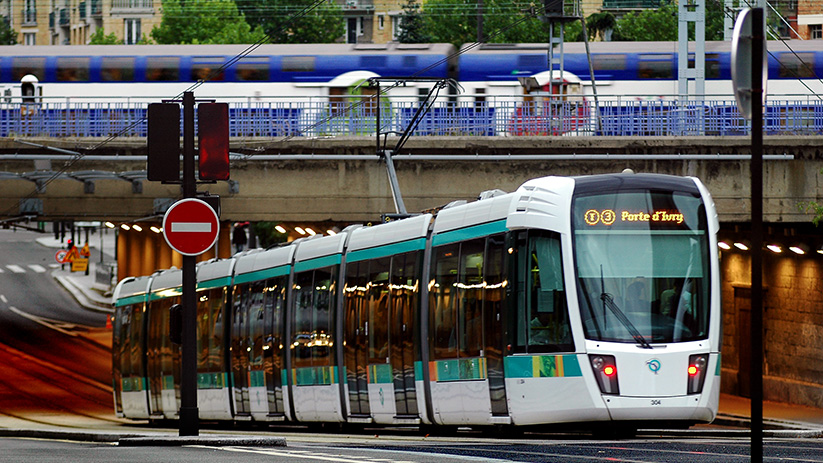

Introduction
Les systèmes des transports parisiens est un réseau complexe et bien développé qui dessert la ville de Paris et sa région environnante. Il comprend plusieurs modes de transport, tels que le métro, les bus, les tramways, les RER (Réseau Express Régional), et les trains de banlieue. Le métro de Paris est l'un des systèmes de métro les plus anciens et étendus au monde, avec 16 lignes qui desservent la ville et ses environs.
Le réseau de bus à Paris est également vaste, offrant une couverture étendue dans la ville et les banlieues. Les tramways complètent le réseau de surface en fournissant des liaisons supplémentaires. Les RER, trains régionaux, relient Paris aux banlieues éloignées et facilitent les déplacements plus rapides sur de plus longues distances.
Le réseau de bus à Paris est également vaste, offrant une couverture étendue dans la ville et les banlieues. Les tramways complètent le réseau de surface en fournissant des liaisons supplémentaires. Les RER, trains régionaux, relient Paris aux banlieues éloignées et facilitent les déplacements plus rapides sur de plus longues distances.
Conclusion
Malgré les défis tels que la congestion et la saturation à certaines heures, le réseau de transports parisiens reste un moyen essentiel pour les habitants et les visiteurs de se déplacer dans la région parisienne. L'expansion continue et les améliorations apportées au réseau visent à répondre à la demande croissante et à améliorer l'efficacité du système.